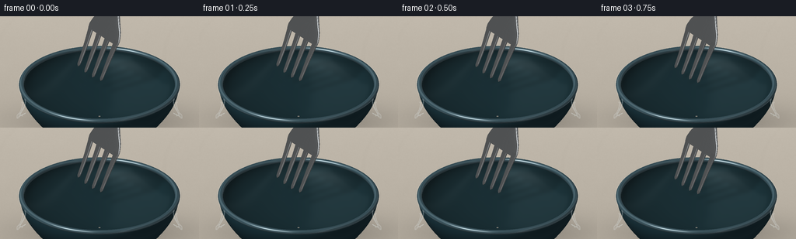
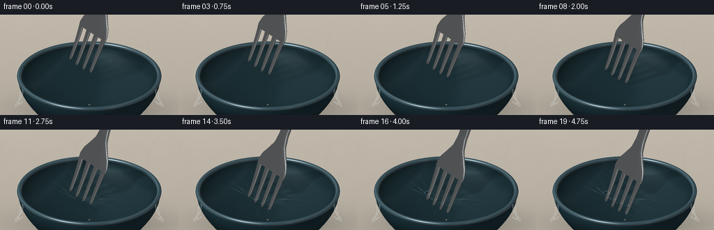
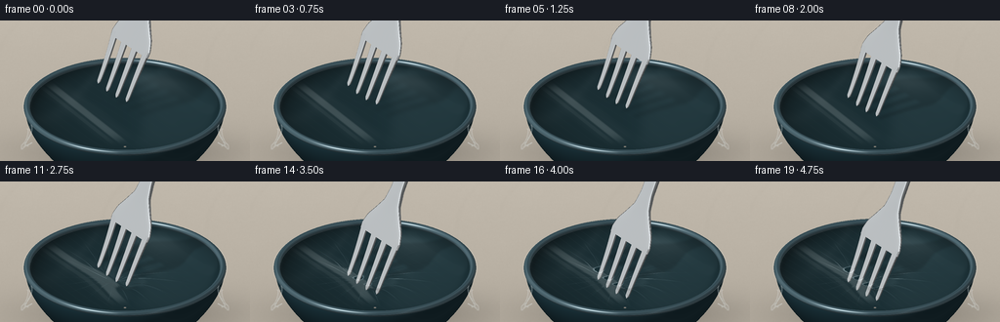

CODING AGENTS AS PIXEL WORLD MODELS
traex/GPT-6.1-Sol · phygen_023
点击播放 · 原生 RGB 像素
逐轮保存的候选
回放视频、检查图与代码变化。
每份候选均可单独播放。实际图片检查记录在下方工具轨迹中。
候选 01播放与检查图
点击播放 · 原生 RGB 像素

展开代码变化
--- 上一保存版本
+++ 本次保存版本
@@ -0,0 +1,370 @@
+from pathlib import Path
+import json
+import numpy as np
+from PIL import Image, ImageDraw, ImageFilter
+from scipy.ndimage import gaussian_filter
+import artifact_io
+
+
+ROOT = Path(__file__).resolve().parent
+SPEC = json.loads((ROOT / 'task_spec.json').read_text())
+S = 3
+W, H = SPEC['width'] * S, SPEC['height'] * S
+SCALE = 72.0 * S
+CX, CY = 128.0 * S, 88.0 * S
+ELEV = np.deg2rad(28)
+SN, CS = np.sin(ELEV), np.cos(ELEV)
+EYE = np.array([0., -CS, SN])
+LIGHT = np.array([-.48, -.35, .805])
+LIGHT /= np.linalg.norm(LIGHT)
+AXIS = np.array([.32, .23, .92])
+AXIS /= np.linalg.norm(AXIS)
+U = np.array([AXIS[1], -AXIS[0], 0.])
+U /= np.linalg.norm(U)
+N = np.cross(U, AXIS)
+N /= np.linalg.norm(N)
+ORIGIN = np.array([-.17, -.10, 0.])
+
+
+def unit(a):
+ return a / np.maximum(np.linalg.norm(a, axis=-1, keepdims=True), 1e-10)
+
+
+def project(p):
+ return np.stack((CX + SCALE * p[..., 0],
+ CY - SCALE * (p[..., 1] * SN + p[..., 2] * CS),
+ -p[..., 1] * CS + p[..., 2] * SN), axis=-1)
+
+
+def normals(vertices, faces):
+ n = np.zeros_like(vertices)
+ v = vertices[faces]
+ fn = np.cross(v[:, 1] - v[:, 0], v[:, 2] - v[:, 0])
+ for i in range(3):
+ np.add.at(n, faces[:, i], fn)
+ return unit(n)
+
+
+def connect_grid(vertices, nr, nc, wrap=True):
+ faces = []
+ for i in range(nr - 1):
+ for j in range(nc if wrap else nc - 1):
+ k = (j + 1) % nc
+ a, b, c, d = i * nc + j, i * nc + k, (i+1) * nc + j, (i+1) * nc + k
+ faces.extend([(a, c, b), (b, c, d)])
+ vv = np.asarray(vertices).reshape(-1, 3)
+ ff = np.array(faces, dtype=np.int32)
+ return vv, ff, normals(vv, ff)
+
+
+def environment(r):
+ # Large studio windows reflected in the stainless steel; no point-source glitter.
+ up = np.clip(r[..., 2] * .65 + .47, 0, 1)
+ val = .14 + .26 * up
+ window = np.exp(-((r[..., 0] + .44) / .30)**8 - ((r[..., 2] - .65) / .57)**8)
+ val += .57 * window
+ strip = np.exp(-((r[..., 0] - .52) / .095)**2) * (.45 + .55 * up)
+ val += .44 * strip
+ val -= .11 * np.exp(-((r[..., 0] - .06) / .13)**2)
+ val += .09 * np.exp(-((r[..., 2] + .35) / .2)**2)
+ return np.clip(val, .035, 1.05)
+
+
+def shade(pos, n, material):
+ # Orient the interpolated surface normal towards the viewer (two-sided metal).
+ facing = np.sum(n * EYE, axis=-1)
+ n = np.where((facing < 0)[..., None], -n, n)
+ ndv = np.clip(np.sum(n * EYE, axis=-1), 0, 1)
+ ndl = np.clip(np.sum(n * LIGHT, axis=-1), 0, 1)
+ reflection = 2 * ndv[..., None] * n - EYE
+ env = environment(reflection)
+ half = unit(LIGHT + EYE)
+ spec = np.clip(np.sum(n * half, axis=-1), 0, 1)
+ if material == 'metal':
+ value = .095 + .84 * env + .17 * spec**90
+ # Subtle brushed lines, attached to the fork rather than the image.
+ across = pos @ U
+ along = pos @ AXIS
+ brushed = .006 * np.sin(across * 2200 + 2*np.sin(along*5))
+ value = np.clip(value + brushed, 0, 1)
+ return np.stack((value * .965, value * .988, value), axis=-1) * 255
+ if material == 'rim':
+ base = np.array([.14, .235, .27])
+ col = base * (.48 + .55 * ndl[..., None])
+ col += (.05 + .62 * spec**65 + .13 * env)[..., None]
+ return np.clip(col * 255, 0, 255)
+ if material == 'ceramic':
+ base = np.array([.12, .225, .26])
+ col = base * (.45 + .67 * ndl[..., None])
+ col += (.19 * spec**45 + .027 * env)[..., None]
+ return np.clip(col * 255, 0, 255)
+ base = np.array([.068, .135, .153])
+ col = base * (.65 + .70 * ndl[..., None])
+ col += (.042 * env + .08 * spec**32)[..., None]
+ return np.clip(col * 255, 0, 255)
+
+
+def raster(img, depth, vertices, faces, vn, material):
+ pp = project(vertices)
+ for inds in faces:
+ tri = pp[inds]
+ x0 = max(0, int(np.floor(tri[:, 0].min())))
+ x1 = min(W-1, int(np.ceil(tri[:, 0].max())))
+ y0 = max(0, int(np.floor(tri[:, 1].min())))
+ y1 = min(H-1, int(np.ceil(tri[:, 1].max())))
+ if x1 < x0 or y1 < y0:
+ continue
+ a, b, c = tri
+ den = (b[1]-c[1])*(a[0]-c[0]) + (c[0]-b[0])*(a[1]-c[1])
+ if abs(den) < 1e-8:
+ continue
+ xx, yy = np.meshgrid(np.arange(x0, x1+1)+.5, np.arange(y0, y1+1)+.5)
+ wa = ((b[1]-c[1])*(xx-c[0]) + (c[0]-b[0])*(yy-c[1]))/den
+ wb = ((c[1]-a[1])*(xx-c[0]) + (a[0]-c[0])*(yy-c[1]))/den
+ wc = 1-wa-wb
+ zz = wa*a[2] + wb*b[2] + wc*c[2]
+ patchz = depth[y0:y1+1, x0:x1+1]
+ mask = (wa >= -1e-6) & (wb >= -1e-6) & (wc >= -1e-6) & (zz > patchz)
+ if not np.any(mask):
+ continue
+ weights = np.stack((wa[mask], wb[mask], wc[mask]), axis=-1)
+ p = weights @ vertices[inds]
+ nn = unit(weights @ vn[inds])
+ col = shade(p, nn, material)
+ patch = img[y0:y1+1, x0:x1+1]
+ patch[mask] = col
+ patchz[mask] = zz[mask]
+
+
+def lathe(profile, segments=144):
+ theta = np.arange(segments) * 2*np.pi/segments
+ vertices = []
+ for r, z in profile:
+ vertices.extend(np.stack((r*np.cos(theta), r*np.sin(theta), np.full_like(theta,z)), axis=-1))
+ return connect_grid(vertices, len(profile), segments)
+
+
+def bowl_meshes():
+ # The outside is gently bowed, with a glazed lip and a darker interior.
+ outer = []
+ for t in np.linspace(0, 1, 28):
+ outer.append((.99 + .43*np.sin(t*np.pi/2), -.78 + .78*t))
+ inner = []
+ for t in np.linspace(0, 1, 29):
+ inner.append((.02 + 1.345*np.sin(t*np.pi/2), -.65 + .65*t**1.45))
+ torus = []
+ for phi in np.linspace(0, 2*np.pi, 21):
+ torus.append((1.393 + .046*np.cos(phi), -.007 + .042*np.sin(phi)))
+ return [('ceramic', lathe(outer)), ('inside', lathe(inner)), ('rim', lathe(torus))]
+
+
+def fork_strip(along, widths, thicknesses, uc, bow):
+ ringn = 24
+ ang = np.arange(ringn) * 2*np.pi/ringn
+ cc = np.sign(np.cos(ang))*np.abs(np.cos(ang))**.56
+ ss = np.sign(np.sin(ang))*np.abs(np.sin(ang))**.56
+ vertices = []
+ for a, w, h, center, bend in zip(along, widths, thicknesses, uc, bow):
+ vertices.extend(ORIGIN + a*AXIS + (center+w*cc[:,None])*U if False else
+ ORIGIN[None,:] + a*AXIS[None,:] + (center+w*cc)[:,None]*U[None,:] + (bend+h*ss)[:,None]*N[None,:])
+ return connect_grid(vertices, len(along), ringn)
+
+
+def fork_meshes():
+ # An actual four-tined fork: independent rounded, tapering prongs, joined by the shoulder.
+ pieces = []
+ centers = [-.345, -.115, .115, .345]
+ for j, c in enumerate(centers):
+ extra = [.012, -.018, -.018, .012][j]
+ aa = np.r_[extra, extra+.018, extra+.045, np.linspace(extra+.085,.81,21)]
+ ww = np.interp(aa-extra, [0,.018,.045,.2,.65,.85], [.006,.023,.035,.040,.057,.065])
+ hh = np.interp(aa-extra, [0,.04,.3,.8], [.005,.014,.019,.023])
+ uc = c * (1 + .11*(aa/.81)**2)
+ bow = .020 * (1-aa/.81)**2
+ pieces.append(fork_strip(aa, ww, hh, uc, bow))
+ aa = np.linspace(.73, 3.4, 65)
+ ww = np.interp(aa, [.73,.82,.96,1.10,1.28,1.5,1.85,2.25,2.85,3.28,3.4],
+ [.450,.456,.405,.30,.175,.128,.126,.152,.213,.188,.01])
+ hh = np.interp(aa,[.73,1.15,1.4,2.8,3.4],[.025,.034,.042,.055,.007])
+ bow = -.025*np.sin((aa-.73)*1.2)
+ pieces.append(fork_strip(aa, ww, hh, np.zeros_like(aa), bow))
+ return pieces
+
+
+YY, XX = np.mgrid[0:H, 0:W]
+WORLD_X = (XX+.5-CX)/SCALE
+IMAGE_V = (CY-YY-.5)/SCALE
+PLANE_Y = IMAGE_V/SN
+RADIUS = 1.455
+CENTERS = np.array([ORIGIN + c*U for c in [-.345,-.115,.115,.345]])
+PHASES = np.array([.69,.58,.64,.76])
+
+
+def motion(t):
+ # First hover, then stretch the membrane, finally push smoothly through it.
+ return .26 - .61 * (t*t*(3-2*t))
+
+
+def film_height(x, y, t):
+ tipz = motion(t)
+ # Each puncture locally releases some strain while the surrounding film remains stretched.
+ radii = x*x+y*y
+ edge = np.clip(1-radii/RADIUS**2,0,1)**1.1
+ broad = np.exp(-((x-ORIGIN[0])**2+(y-ORIGIN[1])**2)/.56)
+ d = max(0, -tipz+.015)
+ d = min(d, .145)
+ z = -.70*d*broad*edge
+ for j,(px,py,pz) in enumerate(CENTERS):
+ rr = (x-px)**2+(y-py)**2
+ local_d = min(max(0,-tipz+.012), .145)
+ z -= .44*local_d*np.exp(-rr/.027)*edge
+ # Very shallow wrinkles in the taut film, increasingly visible as it is pulled down.
+ dx, dy = x-ORIGIN[0], y-ORIGIN[1]
+ r = np.sqrt(dx*dx+dy*dy+1e-8)
+ theta = np.arctan2(dy,dx)
+ load = np.clip((-tipz+.012)/.16,0,1)
+ wrinkle = np.sin(theta*19 + .70*np.sin(theta*5) + r*1.9)
+ ridges = np.exp(-((1-wrinkle)/.10)**2)
+ z += .010*load*ridges*np.exp(-((r-.50)/.56)**2)*edge
+ z += .0016*np.sin(16*x+9*y+.6*np.sin(y*7))*edge
+ return z
+
+
+def background():
+ rng = np.random.default_rng(430)
+ noise = gaussian_filter(rng.normal(size=(H,W)), 1.2)
+ grain = gaussian_filter(rng.normal(size=(H,W)), 17)
+ warm = np.stack((np.full((H,W),.705),np.full((H,W),.673),np.full((H,W),.622)),axis=-1)
+ warm += (.05*(1-YY/H) + .008*noise + .045*grain)[...,None]
+ # Soft, oblique cast shadow of the bowl on a matte warm kitchen worktop.
+ shadow = np.exp(-((WORLD_X-.15)/1.39)**2 - ((YY/S-135)/21)**2)
+ warm *= 1-.26*shadow[...,None]
+ # Out-of-focus veins in the pale stone, deliberately unobtrusive.
+ veins = np.exp(-(np.sin(WORLD_X*2.1 + YY/H*2 + .2*np.sin(YY/H*9))/.052)**2)
+ warm -= .007*gaussian_filter(veins, 3)[...,None]
+ img = np.clip(warm*255,0,255).astype(np.float32)
+ depth = np.full((H,W), -1e5, dtype=np.float32)
+ for material,(v,f,n) in bowl_meshes():
+ raster(img, depth, v, f, n, material)
+ return img, depth
+
+
+def apply_shadow(img, meshes, t):
+ mask = Image.new('L',(W,H))
+ draw = ImageDraw.Draw(mask)
+ zz = motion(t)
+ # Project the fork onto the film in the direction of the broad window light.
+ for vv,ff,nn in meshes:
+ v = vv.copy()
+ v[:,2] += zz
+ q = v - (np.maximum(v[:,2],0)/LIGHT[2])[:,None]*LIGHT
+ q[:,2] = 0
+ pp = project(q)
+ for inds in ff:
+ if np.max(v[inds,2]) > 0:
+ draw.polygon([tuple(a) for a in pp[inds,:2]],fill=255)
+ mask = np.asarray(mask.filter(ImageFilter.GaussianBlur(S*(1.1+max(zz,0)*5))),dtype=np.float32)/255
+ onopening = WORLD_X**2+PLANE_Y**2 < 1.36**2
+ img *= (1 - .15*mask*onopening)[...,None]
+
+
+def film(img, depth, t):
+ y = PLANE_Y.copy()
+ for _ in range(14):
+ z = film_height(WORLD_X,y,t)
+ target = (IMAGE_V-z*CS)/SN
+ y = .5*y+.5*target
+ z = film_height(WORLD_X,y,t)
+ visible = WORLD_X**2+y*y < RADIUS**2
+ fdepth = -y*CS + z*SN
+ visible &= fdepth > depth-.001
+ eps=.002
+ hx=(film_height(WORLD_X+eps,y,t)-film_height(WORLD_X-eps,y,t))/(2*eps)
+ hy=(film_height(WORLD_X,y+eps,t)-film_height(WORLD_X,y-eps,t))/(2*eps)
+ n=unit(np.stack((-hx,-hy,np.ones_like(hx)),axis=-1))
+ ndv=np.clip(n@EYE,0,1)
+ reflection=2*ndv[...,None]*n-EYE
+ fres=.035+.965*(1-ndv)**5
+ env=environment(reflection)
+ # Thin glossy polyethylene: a little haze, but the bowl remains clearly visible beneath it.
+ alpha=.027+.31*fres
+ reflection_col=np.stack((env*.95,env*.985,env),axis=-1)*255
+ shadefilm = img*(1-alpha[...,None]) + reflection_col*alpha[...,None]
+ half=unit(LIGHT+EYE)
+ spec=np.clip(n@half,0,1)**150
+ shadefilm += (spec*70)[...,None]
+ # Fixed, hairline stretch marks along the sheet, slightly bent into the growing dimple.
+ line=np.exp(-(np.sin((WORLD_X*.81+y*.58)*26 + .4*np.sin(y*4)+z*18)/.065)**2)
+ line*=np.exp(-((WORLD_X+.56)/1.3)**2)*.75
+ shadefilm += (line*(2+np.maximum(0,-motion(t))*24))[...,None]
+ # Four small split openings form around the metal tips, not an implausible large tear.
+ holes=np.zeros((H,W),dtype=bool)
+ tear_highlight=np.zeros((H,W),dtype=np.float64)
+ for j,(px,py,pz) in enumerate(CENTERS):
+ opening=np.clip((t-PHASES[j])/.15,0,1)
+ if opening<=0:
+ continue
+ dx=WORLD_X-px
+ dy=y-py
+ across=dx*U[0]+dy*U[1]
+ along=-dx*U[1]+dy*U[0]
+ rr=np.sqrt((across/(.029+.010*opening))**2+(along/(.021+.033*opening))**2)
+ holes |= rr < opening
+ tear_highlight += opening*np.exp(-((rr-1.1)/.22)**2)
+ # A short, stressed split at either end of each puncture.
+ tear_highlight += opening*.35*np.exp(-(across/.008)**2)*np.exp(-((np.abs(along)-.060)/.016)**2)
+ visible &= ~holes
+ shadefilm += tear_highlight[...,None]*np.array([38.,42.,43.])
+ img[visible]=shadefilm[visible]
+ # The sheet's taut cut edge can be seen just beyond the ceramic rim.
+ rad=np.sqrt(WORLD_X**2+y*y)
+ edge=np.exp(-((rad-(RADIUS-.006))/.007)**2)*visible
+ img += edge[...,None]*np.array([19.,21.,22.])
+ return img
+
+
+def loose_wrap(img, t):
+ # Little folds of the excess sheet cling to the near rim. They establish that this is wrap,
+ # rather than liquid or a solid lid, without distracting from the four punctures.
+ overlay=Image.new('RGBA',(W,H),(0,0,0,0))
+ d=ImageDraw.Draw(overlay)
+ for side in [-1,1]:
+ pts=[]
+ for a in np.linspace(-1.2,-.1,60):
+ x=side*(1.37+.05*np.sin(a*7))
+ y=.65*np.sin(a)-.44
+ z=-.03-.14*(np.sin((a+1.2)/1.1*np.pi))**2
+ pts.append(tuple(project(np.array([x,y,z]))[:2]))
+ shifted=[(x+side*4*S,y+3*S+S*np.sin(i*.34)) for i,(x,y) in enumerate(pts)]
+ d.polygon(pts+shifted[::-1],fill=(209,221,221,21))
+ d.line(pts,fill=(224,233,234,92),width=1*S)
+ d.line(shifted,fill=(234,239,239,61),width=1*S)
+ for j in range(6,52,9):
+ d.line([pts[j],shifted[j+3]],fill=(231,238,238,90),width=1)
+ return np.asarray(Image.alpha_composite(Image.fromarray(np.uint8(np.clip(img,0,255))).convert('RGBA'),overlay).convert('RGB'),dtype=np.float32)
+
+
+def main():
+ bg,bz=background()
+ forks=fork_meshes()
+ frames=[]
+ for i in range(SPEC['frames']):
+ t=i/(SPEC['frames']-1)
+ img=bg.copy()
+ depth=bz.copy()
+ apply_shadow(img,forks,t)
+ for vv,ff,nn in forks:
+ v=vv.copy()
+ v[:,2]+=motion(t)
+ raster(img,depth,v,ff,nn,'metal')
+ img=film(img,depth,t)
+ img=loose_wrap(img,t)
+ # Fine photographic grain is spatially consistent, avoiding flickering surfaces.
+ out=Image.fromarray(np.uint8(np.clip(img,0,255))).resize((SPEC['width'],SPEC['height']),Image.Resampling.LANCZOS)
+ frames.append(np.asarray(out))
+ print(f'frame {i+1}/{SPEC["frames"]}',flush=True)
+ artifact_io.save(np.stack(frames).astype(np.uint8),ROOT)
+
+
+if __name__=='__main__':
+ main()
候选 02播放与检查图
点击播放 · 原生 RGB 像素


展开代码变化
--- 上一保存版本
+++ 本次保存版本
@@ -67,6 +67,7 @@
val += .44 * strip
val -= .11 * np.exp(-((r[..., 0] - .06) / .13)**2)
val += .09 * np.exp(-((r[..., 2] + .35) / .2)**2)
+ val += .52 * np.exp(-((r[..., 0] + .84) / .23)**8 - ((r[..., 2] - .08) / .66)**8)
return np.clip(val, .035, 1.05)
@@ -81,7 +82,7 @@
half = unit(LIGHT + EYE)
spec = np.clip(np.sum(n * half, axis=-1), 0, 1)
if material == 'metal':
- value = .095 + .84 * env + .17 * spec**90
+ value = .13 + .80 * env + .17 * spec**90
# Subtle brushed lines, attached to the fork rather than the image.
across = pos @ U
along = pos @ AXIS
@@ -165,8 +166,7 @@
ss = np.sign(np.sin(ang))*np.abs(np.sin(ang))**.56
vertices = []
for a, w, h, center, bend in zip(along, widths, thicknesses, uc, bow):
- vertices.extend(ORIGIN + a*AXIS + (center+w*cc[:,None])*U if False else
- ORIGIN[None,:] + a*AXIS[None,:] + (center+w*cc)[:,None]*U[None,:] + (bend+h*ss)[:,None]*N[None,:])
+ vertices.extend(ORIGIN[None,:] + a*AXIS[None,:] + (center+w*cc)[:,None]*U[None,:] + (bend+h*ss)[:,None]*N[None,:])
return connect_grid(vertices, len(along), ringn)
@@ -287,16 +287,26 @@
fres=.035+.965*(1-ndv)**5
env=environment(reflection)
# Thin glossy polyethylene: a little haze, but the bowl remains clearly visible beneath it.
- alpha=.027+.31*fres
+ alpha=.043+.31*fres
reflection_col=np.stack((env*.95,env*.985,env),axis=-1)*255
shadefilm = img*(1-alpha[...,None]) + reflection_col*alpha[...,None]
half=unit(LIGHT+EYE)
spec=np.clip(n@half,0,1)**150
shadefilm += (spec*70)[...,None]
+ # A softbox reflection traces a clean glossy streak across the clear sheet.
+ # The deformed surface bends the reflected streak, making the growing depression legible.
+ ru=.86*WORLD_X+.51*y+2.1*z
+ rv=-.51*WORLD_X+.86*y
+ long_fade=np.exp(-((rv-.09)/.94)**8)
+ streak=np.exp(-((ru+.58)/.065)**8)*long_fade
+ streak+=.27*np.exp(-((ru+.72)/.035)**8)*long_fade
+ sheen=np.exp(-((ru+.58)/.23)**6)*long_fade
+ reflected_alpha=.155*streak+.025*sheen
+ shadefilm=shadefilm*(1-reflected_alpha[...,None])+np.array([223.,231.,230.])*reflected_alpha[...,None]
# Fixed, hairline stretch marks along the sheet, slightly bent into the growing dimple.
line=np.exp(-(np.sin((WORLD_X*.81+y*.58)*26 + .4*np.sin(y*4)+z*18)/.065)**2)
line*=np.exp(-((WORLD_X+.56)/1.3)**2)*.75
- shadefilm += (line*(2+np.maximum(0,-motion(t))*24))[...,None]
+ shadefilm += (line*(5+np.maximum(0,-motion(t))*24))[...,None]
# Four small split openings form around the metal tips, not an implausible large tear.
holes=np.zeros((H,W),dtype=bool)
tear_highlight=np.zeros((H,W),dtype=np.float64)
@@ -308,7 +318,7 @@
dy=y-py
across=dx*U[0]+dy*U[1]
along=-dx*U[1]+dy*U[0]
- rr=np.sqrt((across/(.029+.010*opening))**2+(along/(.021+.033*opening))**2)
+ rr=np.sqrt((across/(.033+.016*opening))**2+(along/(.021+.050*opening))**2)
holes |= rr < opening
tear_highlight += opening*np.exp(-((rr-1.1)/.22)**2)
# A short, stressed split at either end of each puncture.
候选 03播放与检查图

可观测工具轨迹
实际执行的命令与返回图片。
命令 1exit 0
/bin/bash -lc 'ls -la && cat prompt.txt && cat GENERATION_RULES.md && cat task_spec.json'
命令 2exit 0
/bin/bash -lc 'cat artifact_io.py && ls /usr/share/fonts/truetype'
命令 3exit 0
/bin/bash -lc "python - <<'PY' import importlib.util for x in ['numpy','PIL','scipy','numba']: print(x, bool(importlib.util.find_spec(x))) PY"
命令 4exit 0
/bin/bash -lc 'python generate.py'
命令 5exit 0
/bin/bash -lc 'python generate.py'
命令 6exit 0
/bin/bash -lc "python - <<'PY'
from pathlib import Path
import numpy as np
from PIL import Image
p=Path('.')
a=np.load(p/'pixels.npz')['pixels']
assert a.shape==(144,256,20)
assert len(list((p/'frames').glob('*.png')))==20
assert Image.open(p/'frames/19.png').mode=='RGB'
assert (p/'index.html').is_file() and (p/'generate.py').is_file()
print('Validated: 20 RGB frames, 256Ã144, 4 fps. All required artifacts exist.')
PY"视觉工具实际返回图片 1

视觉工具实际返回图片 2

保存候选 3 份；完成命令 6 次；可验证图片返回 2 张。原始 API 响应与完整日志保留在本地。